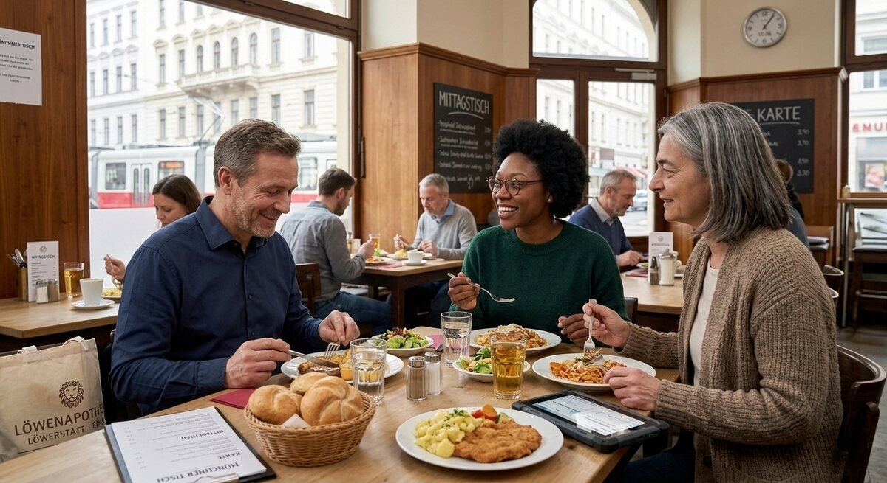

Teil 2 · Bild und Erfahrung
Karte 025
Gemeinsam essen im Restaurant oder in der Kantine
Ausführliches Übungsmaterial zur Vorder- und Rückseite der Karte.

Ihre Aufgabe
- die Personen und den Ort
- was auf dem Tisch steht
- warum gemeinsames Essen wichtig sein kann
- wie Sie selbst im Alltag essen
- ob Sie lieber zu Hause oder auswärts essen
Interaktives Sprechtraining
Mit ChatGPT sprechen üben
Öffne ChatGPT, starte dort zuerst den Sprachmodus (Voice Mode) und füge anschließend den kopierten Übungsprompt in diesen Chat ein.
- Tippe auf den Button. Der Übungsprompt wird kopiert und ChatGPT wird geöffnet. Melde dich bei Bedarf in deinem ChatGPT-Konto an.
- Starte in ChatGPT zuerst den Sprachmodus (Voice Mode).
- Füge den bereits kopierten Prompt in den Chat des Sprachmodus (Voice Mode) ein und sende ihn ab.
- Beginne anschließend die Sprechübung.
- Wenn du die Übung beenden und Feedback bekommen möchtest, sage:
Die Übung ist beendet. Bitte gib mir jetzt Feedback.
Prompt anzeigen oder manuell kopieren
ChatGPT ist ein externer Dienst. Für den Sprachmodus (Voice Mode) musst du dich möglicherweise bei deinem ChatGPT-Konto anmelden und den Zugriff auf das Mikrofon erlauben. Verfügbare Funktionen hängen von deinem Gerät und Konto ab. Die Übung ersetzt keine offizielle Prüfungsbewertung.
Nützliche Satzanfänge
- Ich sehe mehrere Personen, die …
- Auf dem Tisch stehen …
- Gemeinsames Essen ist wichtig, weil …
- Bei mir ist es oft so, dass …
- Am liebsten esse ich …
Modellantwort anhören
Höre zuerst aufmerksam zu. Sprich danach nicht einfach alles nach, sondern bearbeite die Aufgabe mit eigenen Informationen.
Modellantwort
Ich sehe auf dem Bild wahrscheinlich eine Familie oder Kolleginnen und Kollegen in einem Restaurant oder in einer Kantine. Sie sitzen an einem Tisch, essen und sprechen miteinander. Auf dem Tisch stehen vielleicht Teller, Gläser, Brot oder Salat. Die Stimmung wirkt angenehm und ruhig. Ich denke, dass gemeinsames Essen nicht nur satt macht, sondern auch eine gute Gelegenheit für Gespräche ist.
Bei mir ist es im Alltag unterschiedlich. Unter der Woche esse ich oft schnell zu Hause oder nehme etwas mit, weil ich nicht viel Zeit habe. Am Wochenende esse ich lieber mit der Familie zusammen, und das finde ich schöner. Man spricht dann über den Tag und hat mehr Ruhe. Auswärts essen ist natürlich praktisch, aber es kostet auch mehr Geld. Deshalb koche ich meistens selbst. Trotzdem finde ich es schön, manchmal gemeinsam in ein Café oder Restaurant zu gehen, weil das etwas Besonderes ist.
Mögliche Prüferfragen und Antwortideen
-
Kochen Sie gern selbst?
Antwortidee: Ja, ich koche gern, besonders einfache und gesunde Gerichte.
-
Was essen Sie oft im Alltag?
Antwortidee: Oft esse ich Reis, Gemüse, Suppe oder Nudeln.
-
Ist gemeinsames Essen in Ihrer Familie wichtig?
Antwortidee: Ja, wenn es zeitlich klappt, essen wir gern zusammen.
-
Finden Sie Restaurants teuer?
Antwortidee: Manchmal schon, deshalb gehe ich nicht so oft ins Restaurant.
Wortschatz
| Deutsch | Englisch |
|---|---|
| die Kantine | cafeteria |
| der Teller | plate |
| gemeinsam | together |
| satt | full |
| mitnehmen | to take along |
| das Gericht | dish |
| auswärts essen | to eat out |
| die Stimmung | atmosphere |
Schnelltraining
Beschreiben Sie zuerst nur den Tisch. Danach sagen Sie zwei Sätze über Ihre eigenen Essgewohnheiten.